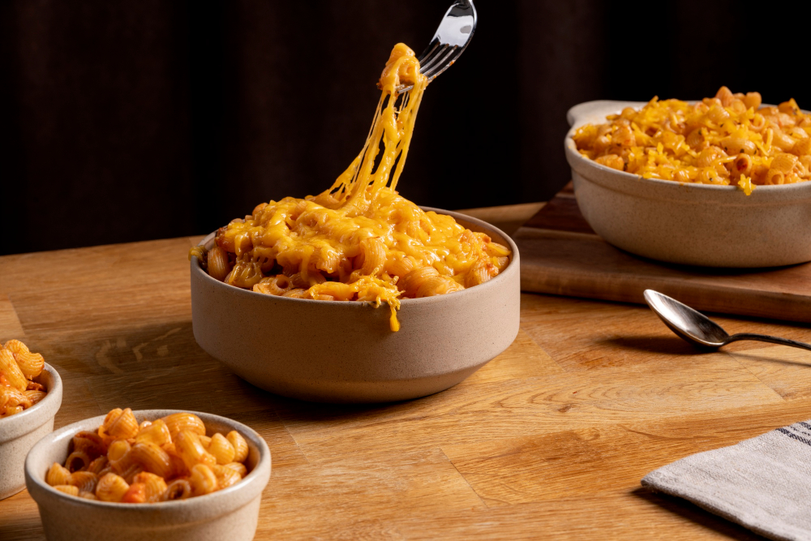

Mac and Cheese Recipe

Mac and cheese is a popular pasta dish consisting of cooked macaroni pasta enveloped in a cheese sauce, most often cheddar.
It can be prepared on the stovetop or baked in the oven, sometimes with a breadcrumb topping, and is widely considered a comfort food.
Ingredients:
- Macaroni
- Butter
- Flour
- Milk
- Cheese
- Seasonings
- Bread crumbs
Steps:
- Boil the noodles, drain and transfer to a prepared baking dish.
- Make the cheese sauce, pour the sauce over the noodles, and stir.
- Make the topping, spread it over macaroni and cheese, and sprinkle with paprika.
- Bake the mac and cheese until the topping is golden brown.
Home